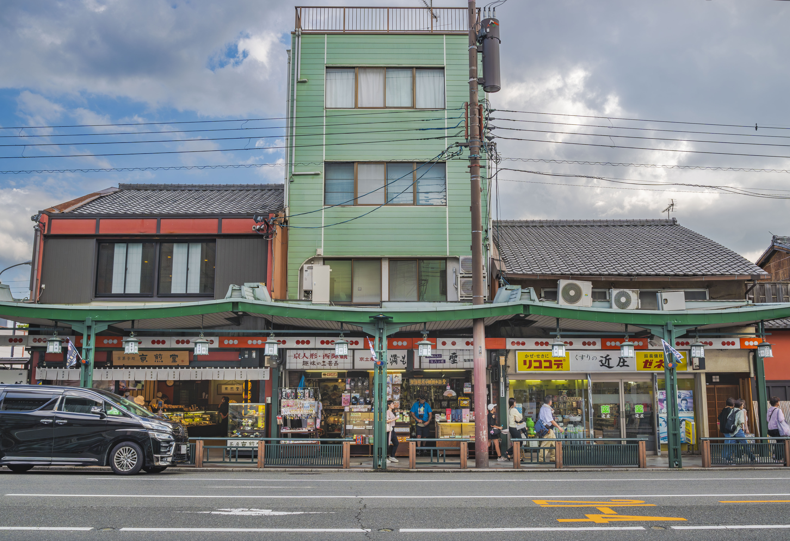
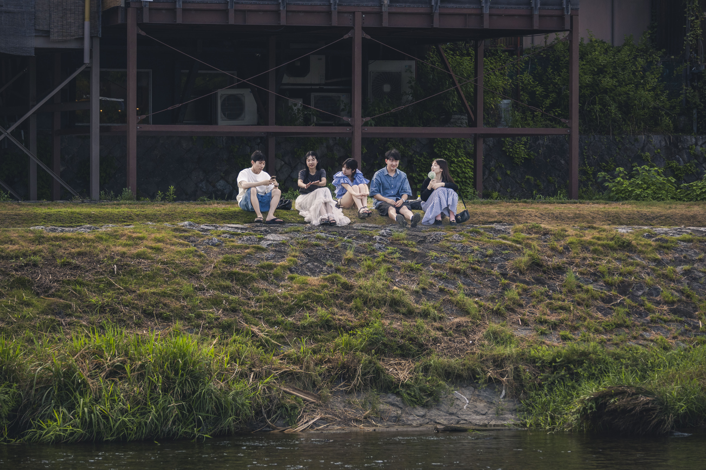
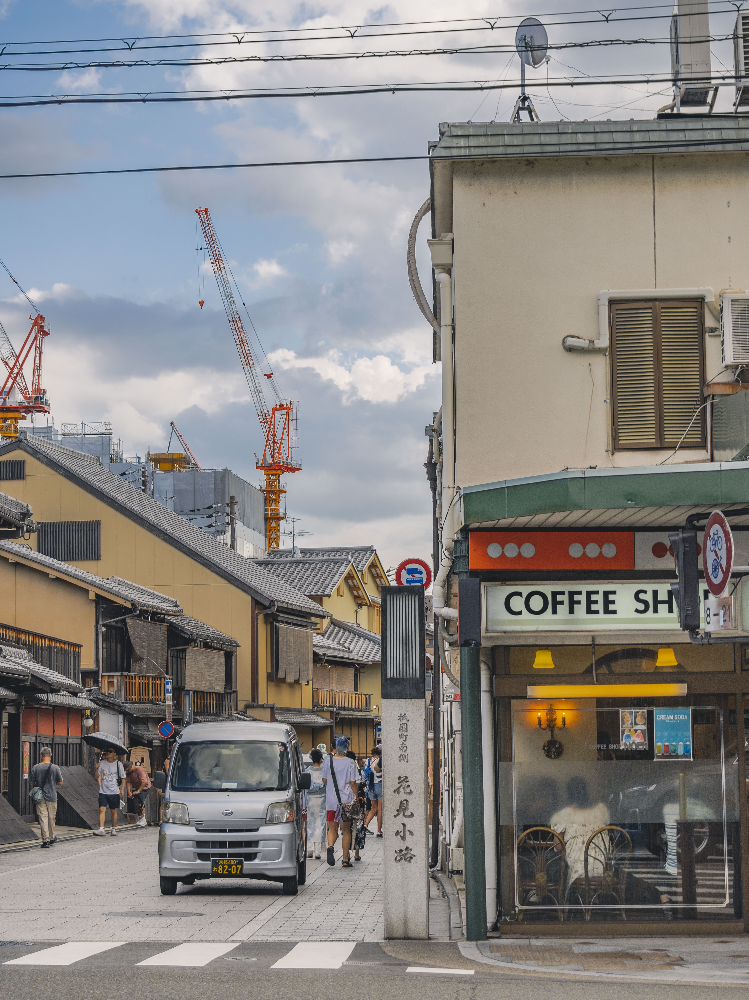
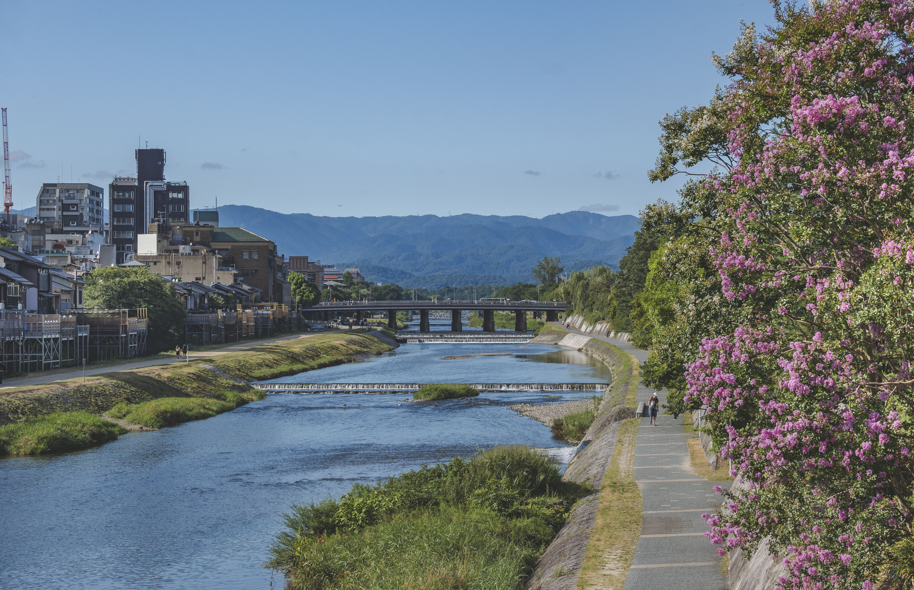
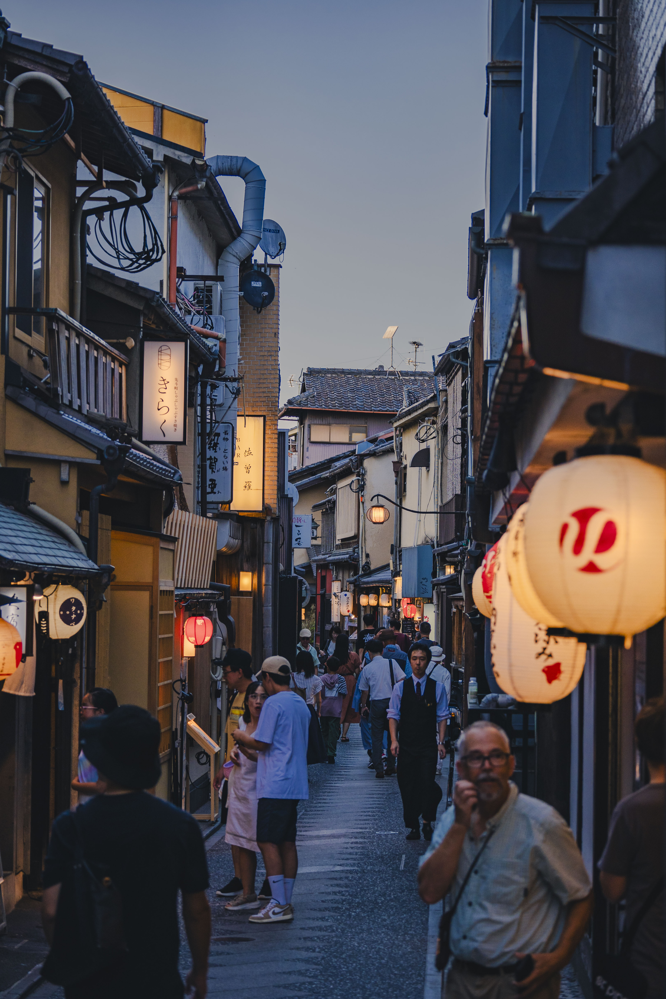
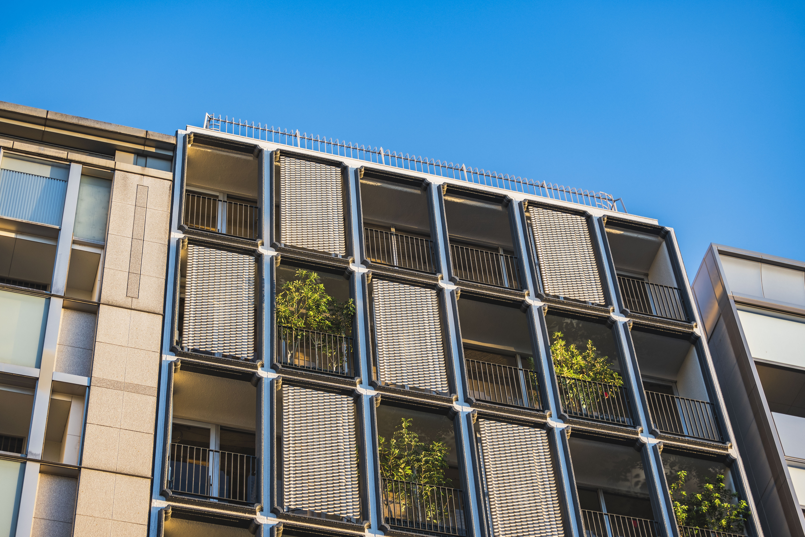
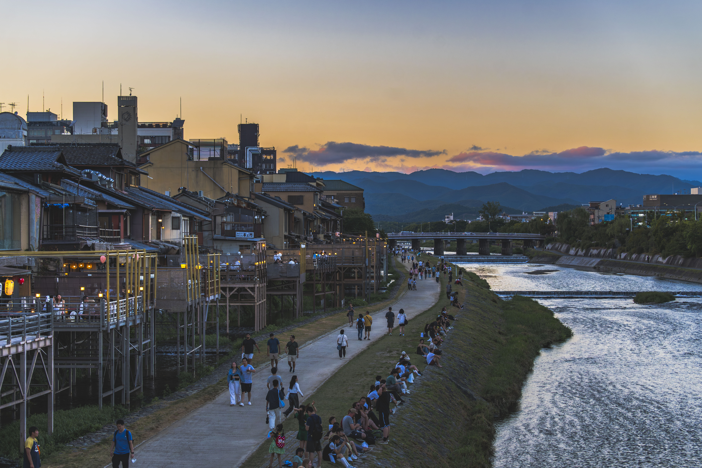

从四条河原町往东走，是我很喜欢的一段京都。站在这里看这座城市，会很明显地感觉到它的两种气质：西边是更现代的京都，街道和建筑带来清晰的城市感；再往东一点，穿过鸭川，街道的风格就开始变化，节奏也跟着慢下来。
这段路的好拍之处，并不在于某一个固定机位，而是在于过渡本身。商业街的明亮招牌、桥上的风、河边坐着的人、祇园一带逐渐变低的屋檐和灯光，会在很短的步行距离里连续出现。对摄影来说，它像是一段从城市进入旧街的缓慢转场。

从四条河原町往东走，是我很喜欢的一段京都。站在这里看这座城市，会很明显地感觉到它的两种气质：西边是更现代的京都，街道和建筑带来清晰的城市感；再往东一点，穿过鸭川，街道的风格就开始变化，节奏也跟着慢下来。
这段路的好拍之处，并不在于某一个固定机位，而是在于过渡本身。商业街的明亮招牌、桥上的风、河边坐着的人、祇园一带逐渐变低的屋檐和灯光，会在很短的步行距离里连续出现。对摄影来说，它像是一段从城市进入旧街的缓慢转场。


鸭川是京都很重要的一条河，到现在都还保留着很强的日常性。如果把它当作一个打卡景点来看，可能会有些失望。这里没有那些特别明确的“出片机位”，更多只是一些很普通的片刻：有人坐在草坡上聊天，有人沿着河边散步，有人骑着自行车经过，也有人什么都不做，只是吹风、看暮色渐起。
它更像这座城市一直在使用的公共空间。一边是当下的城市生活，一边是被时间慢慢沉淀下来的京都。拍摄时我会更愿意保留这种松弛，而不是把画面处理得太满。留一点河岸、天空和人的距离，反而更接近我对鸭川的印象。


再往东走，就进入祇园。这里的形成与八坂神社有关。从神社开始，有了人来往，街市和文化一点点生长，才有了今天的祇园。漫步在这一带，你会同时感受到四条河原町的明亮与热闹，鸭川的松弛与留白，以及祇园与花见小路保留下来的旧街、灯光和更缓慢的步行节奏。
祇园一带适合慢慢拍。不要急着追求完整的传统街景，反而可以多看一些角落：门帘、木格窗、路灯、行人的背影、街口突然亮起的一小块光。它们不一定是京都最典型的明信片画面，但更接近步行时真实遇见的京都。


鸭川、祇园一带给我最大的感受，不只是景色，而是不同于其他景区的生活感，也让这里多了一种在日本并不常见的松弛。对游客而言，这里能让你从不断的打卡式旅行中短暂抽离，在城市里借到一小段安静而放松的日常。
如果只留一条拍摄建议，我会说：从四条河原町往东走，不要把相机一直举在眼前。先走一段，感受光线、河岸和街道的转换，再决定在哪里停下来。这里最好的照片，往往不是被安排好的，而是在慢下来的时候自然出现的。